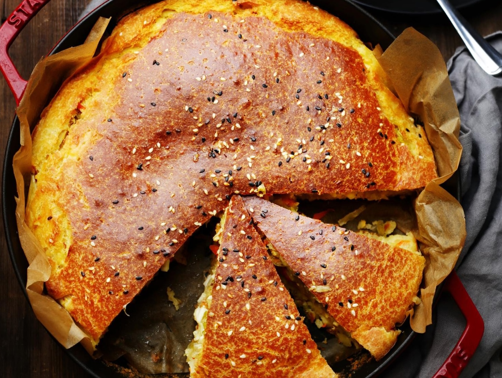

Быстрый и простой пирог. Приготовление можно разбить на несколько этапов: заранее подготовить начинку для пирога, это потребует совсем немного усилий и 15 минут вашего времени, затем ее надо остудить. И всего 5 минут уйдет на приготовление теста. Для пышного и воздушного теста в кефир при замешивании добавляется сода, она слегка чувствуется, хотя и почти незаметно. Тем, кому этот момент критически важен, ее можно заменить разрыхлителем, но его нужно смешивать с мукой, а не с кефиром. Отварные яйца к капусте по желанию можно не добавлять.
для теста: